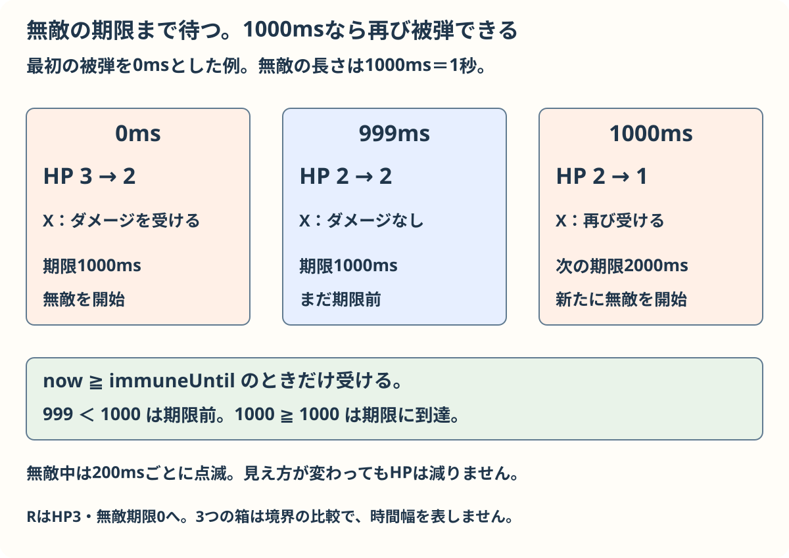

ダメージ後の無敵時間を作る
始める前に
ZIPを展開してできたフォルダーでindex.htmlを開きます。ZIPにはひな型の3ファイルが入っています。
WindowsでZIPを展開する（動画）
準備と操作を参考に、作業用フォルダーを用意します。この教材ではそのフォルダーの script.js を編集し、保存後に同じフォルダーの index.html を開くか再読み込みします。
ステップ 1：Xで体力3を1減らす
このステップの見本を図で見る
max(0,3-1)=2
押すたびに1減らす。
max(0,0-1)=0
体力を負の数にしない。
ゲーム画面とコードの前後を見る
このステップの見本
この行を足す前 変わったコードの一例（script.js）
if (event.key.toLowerCase() === "x") { hp = Math.max(0, hp - 1); }
見本で確かめること
Xを押すたび体力が3から減り、0未満にはなりません。
目標
Xで体力3を1減らす。
予想してみる
体力1で被弾すると？
答えを確認する
0になります。
小さな作業
上から順に作業します。目印を探し、その下のコードを書きます。
体力を覚える
作業用の script.js の先頭近くで、次の目印のすぐ下に追加します。
目印
const ctx = canvas.getContext("2d");追加するコード
let hp;let は後で値を変えられる変数を作ります。hp は残り体力です。
体力を3から始める
start() から update() の閉じ波括弧までで、次の範囲を置き換えます。
置き換える範囲
function start() {
}
function update() {
}置き換えるコード
function start() {
hp = 3;
}
function update() {
}= は右の値を左の変数に入れる代入です。体力を 3 にします。
体力を表示する
draw() の画面を消す行の下で、次の目印のすぐ下に追加します。
目印
ctx.clearRect(0, 0, canvas.width, canvas.height);追加するコード
ctx.fillStyle = "#26334a";
ctx.font = "28px sans-serif";
ctx.fillText("体力: " + hp, 230, 100);色と文字の大きさを決め、文字と体力を + でつなぎます。座標は左上を原点として横 230、縦 100 です。
プレイヤーを描く
体力の表示の下で、次の目印のすぐ下に追加します。
目印
ctx.fillText("体力: " + hp, 230, 100);追加するコード
ctx.fillRect(300, 160, 120, 100);fillRect の数字は左・上・幅・高さです。横 300、縦 160 に幅 120、高さ 100 の四角を描きます。
操作を案内する
プレイヤーを描く行の下で、次の目印のすぐ下に追加します。
目印
ctx.fillRect(300, 160, 120, 100);追加するコード
ctx.fillText("X: ダメージ R: 最初から", 150, 320);X でダメージ、R で最初から始める案内を表示します。
キー入力を受け取る
draw() の後、gameLoop() の先頭行の前で、次の目印のすぐ上に追加します。
目印
function gameLoop() {追加するコード
window.addEventListener("keydown", event => {
if (event.ctrlKey || event.altKey || event.metaKey || event.isComposing) return;
if (event.repeat) return;
});keydown はキーを押したときに起きます。|| はどれか一つが成り立つという意味です。修飾キーや日本語入力中、押し続けた繰り返しは return で終えます。
Xで体力を減らす
キー入力処理の繰り返しを除く行の下で、次の目印のすぐ下に追加します。
目印
if (event.repeat) return;追加するコード
if (event.key.toLowerCase() === "x") { hp = Math.max(0, hp - 1); }toLowerCase() で小文字にしたキーが X なら体力を 1 減らします。=== は同じかを調べます。Math.max で 0 より小さくならないようにします。
Rで最初から始める
X の判定の下で、次の目印のすぐ下に追加します。
目印
if (event.key.toLowerCase() === "x") { hp = Math.max(0, hp - 1); }追加するコード
if (event.key.toLowerCase() === "r") start();R なら start() で体力を 3 に戻します。
保存して作業用の index.html を再読み込みし、X を押すたび体力が 1 減り、R で 3 に戻ることを確かめます。
保存後の確認
保存してゲーム画面を更新する（動画）
index.html を再読み込みします。Xを押すたび体力が3から減り、0未満にはなりません。Rで戻ります。 この段階の見本を開く
小さな練習
startの hp = 3 の3を4に変え、最初の体力4を確かめます。3に戻します。
ステップ 2：被弾から1000msは追加ダメージを受けない
このステップの見本を図で見る
無敵中なので減らさない
続けて押しても体力は同じ。
2-1=1、immuneUntil=2000+1000
ちょうど1秒後から次のダメージを受ける。
ゲーム画面とコードの前後を見る
このステップの見本
hp = 3;
変わったコードの一例（script.js）hp = 3; immuneUntil = 0;
見本で確かめること
Xを続けて押しても1秒間は1回しか減りません。
目標
被弾から1000msは追加ダメージを受けない。
予想してみる
999ミリ秒後の追加被弾は？
答えを確認する
まだ無敵なので体力は減りません。
小さな作業
上から順に作業します。目印を探し、その下のコードを書きます。
無敵の終了時刻を覚える
変数の宣言で、次の範囲を置き換えます。
置き換える範囲
let hp;置き換えるコード
let hp; let immuneUntil;immuneUntil はダメージを受けない期間の終了時刻を覚えます。
無敵の時刻を初期化する
start() の中で、次の範囲を置き換えます。
置き換える範囲
hp = 3;置き換えるコード
hp = 3; immuneUntil = 0;最初は終了時刻を 0 にします。
ダメージ後に1秒間の無敵を作る
X キーの判定で、次の範囲を置き換えます。
置き換える範囲
if (event.key.toLowerCase() === "x") { hp = Math.max(0, hp - 1); }置き換えるコード
if (event.key.toLowerCase() === "x") { const now = performance.now(); if (now >= immuneUntil && hp > 0) { hp -= 1; immuneUntil = now + 1000; } }performance.now() は現在時刻をミリ秒で返します。>= は以上、> はより大きい、&& は両方の条件です。現在時刻が終了時刻以上で体力が残っていれば、体力を 1 減らし、終了時刻を今から 1000 ミリ秒後にします。終了時刻ちょうどなら再びダメージを受けます。
保存して再読み込みし、X を続けて押しても1秒間は体力が減らず、1秒後に再び減ることを確かめます。
保存後の確認
Xを続けて押しても1秒間は1回しか減りません。 この段階の見本を開く
小さな練習
immuneUntil = now + 1000 の1000を2000に変え、1秒後のXでは体力が減らないことを確かめます。1000に戻します。
ステップ 3：無敵中は点滅、Rで元に戻す
このステップの見本を図で見る
1200<2000、余り0 → 表示
体力は同じまま見える。
1400<2000、余り1 → 描かない
体力を減らさず見た目だけ消す。
無敵でない → 常に表示
終了後は点滅せず表示する。
ゲーム画面とコードの前後を見る
このステップの見本
この行を足す前 変わったコードの一例（script.js）
if (performance.now() >= immuneUntil || Math.floor(performance.now() / 200) % 2 === 0)
見本で確かめること
被弾後に点滅し、1秒後に再び被弾できます。
目標
無敵中は点滅、Rで元に戻す。
予想してみる
1000ミリ秒ちょうどの被弾は？
答えを確認する
無敵の期限に達したので受けます。
小さな作業
上から順に作業します。目印を探し、その下のコードを書きます。
無敵中に四角を点滅させる
draw() のプレイヤーを描く行で、次の範囲を置き換えます。
置き換える範囲
ctx.fillRect(300, 160, 120, 100);置き換えるコード
if (performance.now() >= immuneUntil || Math.floor(performance.now() / 200) % 2 === 0)
ctx.fillRect(300, 160, 120, 100);|| はどちらか一方が成り立つという意味です。無敵が終わっていれば描きます。無敵中は時刻を 200 で割り Math.floor で切り捨てた数を、% 2 で割った余りが 0 のときだけ描くため、表示と非表示が交互になります。

最初の被弾時刻を0msとするとHP3から2、無敵期限1000ms。999msでXを押してもHP2。1000msにXを押すとHP1になり、新たな無敵期限は2000ms。
保存して再読み込みし、X を押した後、1秒間四角が点滅し、その後は表示されたままになることを確かめます。
保存後の確認
被弾後に点滅し、1秒後に再び被弾できます。Rで体力3に戻ります。 この段階の見本を開く
小さな練習
drawの点滅に使う / 200 の200を400に変え、点滅がゆっくりになることを確かめます。200に戻します。
自分のゲームに組み込むには
immuneUntil を被弾対象の状態として持ち、すべてのダメージ経路で同じ期限を確認します。受けたときだけ期限と体力を更新し、再開始では期限も戻します。
見本の状態、入力、更新、描画を自分のゲームの名前に合わせて移します。すでにある start()、update()、draw() に必要な部分を加え、ゲームループは増やしません。やり直すときは追加した状態も初期化してください。
操作：X:ダメージ、R:最初から。